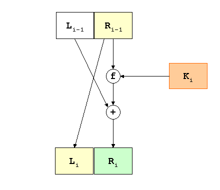
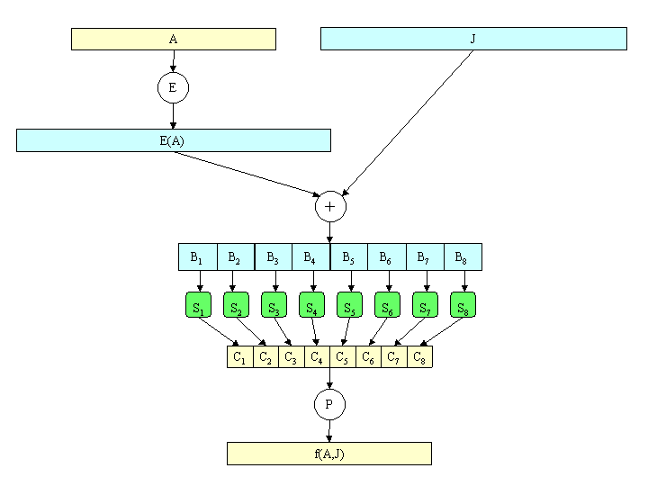

DES šifrira otvoreni tekst duljine 64 bita, koristeći ključ
K duljine 56 bitova. Tako se dobiva šifrat koji ponovo
ima 64 bita. Algoritam se sastoji od 3 etape:
Za dani otvoreni tekst x, permutiranjem pomoću
fiksne inicijalne permutacije
IP dobije se x0.
Zapišemo x0 = IP(x) u obliku
x0 = L0R0,
gdje L0 sadrži prva (lijeva) 32 bita, a
R0 zadnja (desna) 32 bita od x0.
Određena funkcija se 16 puta iterira. Računamo
LiRi,1 ≤ i
≤ 16, po sljedećem pravilu:
Li = Ri -1 Ri = Li -1
⊕ f (Ri -1,
Ki),
gdje ⊕> označava operaciju
"ekskluzivno ili" (XOR). Funkciju f ćemo opisati kasnije,
a K1, K2, ... ,
K16 su nizovi bitova duljine 48, koji se
dobivaju kao permutacije nekih bitova iz K.
Primijenimo
inverznu permutaciju
IP-1 na R16L16 i tako
dobivamo šifrat y. Dakle,
y = IP-1(R16L16).
Uočimo inverzni poredak od L16 i
R16.

Funkcija f za prvi argument ima niz bitova A duljine
32, a za drugi argument ima niz bitova J duljine 48.
Kao rezultat se dobiva niz bitova duljine 32. Funkcija se
računa u sljedeća 4 koraka:
Prvi argument A se "proširi" do niza duljine 48 u
skladu s fiksnom funkcijom proširenjaE.
Niz E(A) se sastoji od 32 bita iz A,
permutiranih na određeni način, s time da se 16 bitova
pojavi dvaput.
Izračunamo E(A)
⊕ J i rezultat
zapišemo kao spoj od osam 6-bitnih nizova
B = B1B2B3B4B5B6B7B8.
Sljedeći korak koristi 8 tzv.
S-kutija
(supstitucijskih kutija) S1, ... ,
S8. Svaki Si je fiksna
4 × 16 matrica čiji su elementi cijeli brojevi između
0 i 15. Za dani niz bitova
duljine 6, recimo Bj =
b1b2b3b4b5b6,
računamo
Sj (Bj) na sljedeći način.
Dva bita b1b6
određuju binarni zapis retka r od Sj (r = 0,1,2,3),
a četiri bita b2b3b4b5
određuju binarni zapis stupca c od Sj
(c = 0,1,2,...,15). Sada je
Sj (Bj) po
definiciji jednako Sj (r,c),
zapisano kao binarni broj duljine 4. Na ovaj način izračunamo
Cj = Sj (Bj),j = 1,2,...,8.
Niz bitova
C1C2C3C4C5C6C7C8
duljine 32 se permutira pomoću fiksne završne permutacijeP.
Tako se dobije P(C), što je po definiciji
upravo f(A,J).

Konačno, trebamo opisati računanje tablice ključeva
K1, K2, ... , K16
iz ključa K. Ključ K se sastoji od 64 bita, od
kojih 56 predstavlja ključ, a preostalih 8 bitova služe za testiranje
pariteta. Bitovi na pozicijama 8, 16, ... , 64 su definirani tako da
svaki bajt (8 bitova) sadrži neparan broj jedinica. Ovi bitovi se
ignoriraju kod računanja tablice ključeva.
Za dani 64-bitni ključ K, ignoriramo paritetne bitove,
te permutiramo preostale bitove pomoću fiksne permutacije
PC1.
Zapišemo PC1(K) = C0D0,
gdje C0 sadrži prvih 28, a D0
zadnjih 28 bitova od PC1(K).
Za i = 1, 2, ... , 16 računamo:
Ci =
LSi (Ci -1), Di =
LSi (Di -1), Ki = PC2(CiDi).
LSi predstavlja ciklički pomak ulijevo za 1 ili 2
pozicije, u ovisnosti od i. Ako je i = 1, 2, 9 ili 16,
onda je pomak za jednu poziciju, a inače je pomak za dvije pozicije.
PC2 je još jedna fiksna permutacija.
Ovim je u potpunosti opisan postupak šifriranja.
Dešifriranje koristi isti algoritam kao šifriranje. Krenemo od šifrata
y, ali koristimo tablicu ključeva u obrnutom redoslijedu:
K16, K15, ... , K1.
Kao rezultat dobivamo otvoreni tekst x.
Uvjerimo se da ovako definirana funkcija dešifriranja dK zaista ima
traženo svojstvo da je dK(y) = x.
Podsjetimo se da smo y dobili kao
y = IP-1(R16L16).
Stoga se primjenom inicijalne permutacije na y dobije
y0 = R16L16.
Nakon prve runde dešifriranja, lijeva polovica
postaje L16 = R15,
a desna R16 ⊕
f(L16,K16).
No, iz zadnje runde šifriranja znamo da vrijedi
R16 = L15 ⊕
f(R15,K16) = L15
⊕ f(L16,K16).
Zato je R16
⊕ f(L16,K16) =
L15.
Znači, nakon jedne runde
dešifriranja dobivamo R15L15.
Nastavljajući taj postupak,
nakon svake sljedeće rudne dešifriranja dobivat ćemo redom:
R14L14,R13L13 ...,
R1L1 i nakon zadnje runde
R0L0.
Preostaje zamijeniti poredak lijeve i desne polovice i
primijeniti IP-1.
Dakle, na kraju postupka dešifriranja dobivamo
IP-1(L0R0),
a to je upravo otvoreni tekst x, što je i trebalo dokazati.
Vidimo da razlog za zamjenu lijeve i desne polovice prije primjene permutacije
IP-1 leži upravo u želji da se za dešifriranje može koristiti isti
algoritam kao za šifriranje.